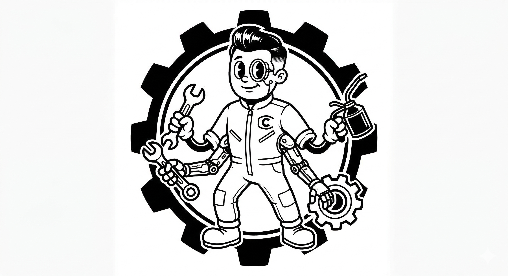

Standardize Claude Code across teams
curl -sL https://corpo-claude.dev/install.sh | bashInstall and share Claude Code slash commands across your team
Bundle provider config, MCP servers, hooks, and CLAUDE.md into one installable unit
Launch parallel Claude agents in isolated git worktrees with Docker sandboxes
$ corpo-claude registry add myorg/claude-config
$ corpo-claude skill install review --global
$ corpo-claude profile install --profile backend
$ corpo-claude fork